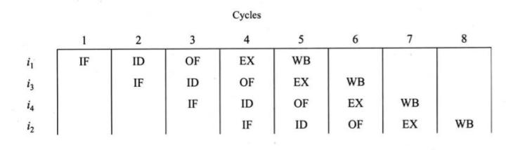

There are some factors that cause the pipeline to deviate its normal performance. Some of these factors are given below:
In general, supplying instructions rapidly through a pipeline is costly in terms of chip area. Buffering the data to be sent to the pipeline is one simple way of improving the overall utilization of a pipeline. The utilization of a pipeline is defined as the percentage of time that the stages of the pipeline are used over a sufficiently long period of time. A pipeline is utilized 100% of the time when every stage is used (utilized) during each clock cycle. Occasionally, the pipeline has to be drained and refilled, for example, whenever an interrupt or a branch occurs. The time spent refilling the pipeline can be minimized by having instructions and data loaded ahead of time into various geographically close buffers (like on-chip caches) for immediate transfer into the pipeline. If instructions and data for normal execution can be fetched before they are needed and stored in buffers, the pipeline will have a continuous source of information with which to work. Prefetch algorithms are used to make sure potentially needed instructions are available most of the time. Delays from memoryaccess conflicts can thereby be reduced if these algorithms are used, since the time required to transfer data from main memory is far greater than the time required to transfer data from a buffer.
he bottleneck problem relates to the amount of load (work) assigned to a stage in the pipeline. If too much work is applied to one stage, the time taken to complete an operation at that stage can become unacceptably long. This relatively long time spent by the instruction at one stage will inevitably create a bottleneck in the pipeline system. In such a system, it is better to remove the bottleneck that is the source of congestion. One solution to this problem is to further subdivide the stage. Another solution is to build multiple copies of this stage into the pipeline.
If an instruction is available, but cannot be executed for some reason, a hazard exists for that instruction. These hazards create issuing problems; they prevent issuing an instruction for execution. Three types of hazard are discussed here. They are called structural hazard, data hazard, and control hazard. A structural hazard refers to a situation in which a required resource is not available (or is busy) for executing an instruction. A data hazard refers to a situation in which there exists a data dependency (operand conflict) with a prior instruction. A control hazard refers to a situation in which an instruction, such as branch, causes a change in the program flow. Each of these hazards is explained next.
A structural hazard occurs as a result of resource conflicts between instructions. One type of structural hazard that may occur is due to the design of execution units. If an execution unit that requires more than one clock cycle (such as multiply) is not fully pipelined or is not replicated, then a sequence of instructions that uses the unit cannot be subsequently (one per clock cycle) issued for execution. Replicating and/or pipelining execution units increases the number of instructions that can be issued simultaneously. Another type of structural hazard that may occur is due to the design of register files. If a register file does not have multiple write (read) ports, multiple writes (reads) to (from) registers cannot be performed simultaneously. For example, under certain situations the instruction pipeline might want to perform two register writes in a clock cycle. This may not be possible when the register file has only one write port. The effect of a structural hazard can be reduced fairly simply by implementing multiple execution units and using register files with multiple input/output ports.
i1 Add R2, R3, R4 -- R2=R3+R4 i2 Add R5, R2, R1 -- R5=R2+R1
 The delaying of execution can be accomplished in two ways. One way is to delay the OF or IF stages of i2 for two clock cycles. To insert a delay, an extra hardware component called a pipeline interlock can be added to the pipeline. A pipeline interlock detects the dependency and delays the dependent instructions until the conflict is resolved. Another way is to let the compiler solve the dependency problem. During compilation, the compiler detects the dependency between data and instructions. It then rearranges these instructions so that the dependency is not hazardous to the system. If it is not possible to rearrange the instructions, NOP (no operation) instructions are inserted to create delays. For example, consider the four instructions. These instructions may be reordered so that i3 and i4, which are not dependent oni1 and i2, are inserted between i1 and i2. i1 Add R2, R3, R4 -- R2=R3+R4 i2 Add R5, R2, R1 -- R5=R2+R1 i3 Add R6, R6, R7 -- R6=R6+R7 i4 Add R8, R8, R7 -- R8=R8+R7
In the previous type of data hazard, an instruction uses the result of a previous instruction as input data. In addition to this type of data hazard, other types may occur in designs that allow concurrent execution of instructions. Note that the type of pipeline design considered so far preserves the execution order of instructions in the program. Later in this section we will consider architectures that allow concurrent execution of independent instructions. There are three primary types of data hazards: RAW (read after write), WAR (write after read), and WAW (write after write). The hazard names denote the execution ordering of the instructions that must be maintained to produce a valid result; otherwise, an invalid result might occur. Each of these hazards is explained in the following discussion. In each explanation, it is assumed that there are two instructions i1 and i2, and i2 should be executed after i1.